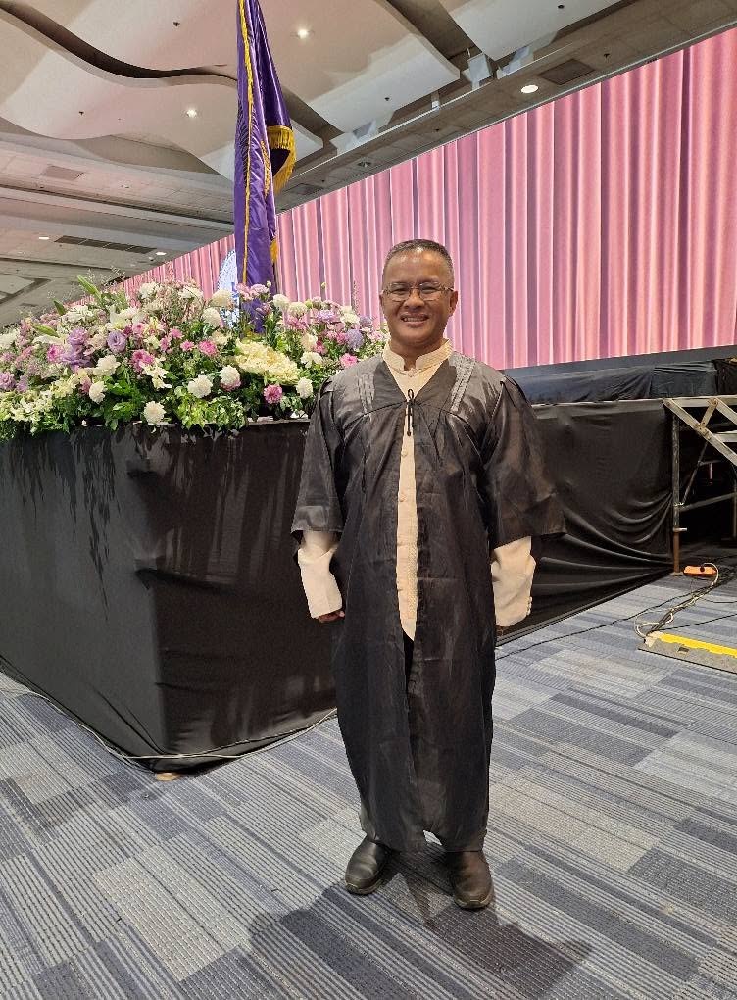

ATTORNEY • LEGAL PROFESSIONAL
A dedicated legal professional committed to serving others through knowledge, integrity, leadership, and community service.
ABOUT THE ATTORNEY
Atty. Renan A. Nadado is a legal professional based in Bacolod City, Negros Occidental, Philippines.
He completed his elementary education at Dona Emilia Jayme Garcia Elementary School and his secondary education at Negros Occidental High School.
He pursued his college education at the University of St. La Salle - Bacolod, earning a Bachelor of Secondary Education, Major in Mathematics.
He also completed studies at the Sacred Heart Seminary - Catechetical Institute, major in Catechetics, in 2004.
He pursued his legal education at the University of Negros Occidental Recoletos and earned his Juris Doctor.
He successfully passed the Philippine Bar Examination in 2023.
Bacolod City, Negros Occidental, Philippines
Attorney at Law
ACADEMIC BACKGROUND
Elementary Education
Secondary Education
Bachelor of Secondary Education
Major in Mathematics
Catechetical Institute
Major in Catechetics
Juris Doctor
Major in Educational Management
Successfully passed the Philippine Bar Examination in 2023.
PROFESSIONAL MILESTONES
Successfully passed the Philippine Bar Examination in 2023.
Completed legal education at the University of Negros Occidental-Recoletos.
Major in Educational Management.
Professional qualification included among the credentials provided for Atty. Nadado.
Training Team Member of the Boy Scouts of the Philippines - Negros Occidental Council.
Member of the Lupon ng Tagapamayapa, Brgy. Tangub, since 2016.
COMMUNITY & LEADERSHIP
Atty. Renan A. Nadado is a Training Team Member (TTM) of the Boy Scouts of the Philippines in the Negros Occidental Council.
His involvement includes participation in training, leadership, service, and community development.
Member, Lupon ng Tagapamayapa
Barangay Tangub
2016 – Present
Serving as a member of the Lupon ng Tagapamayapa in Barangay Tangub since 2016.
GET IN TOUCH
0976 130 0511
renannadado@gmail.com
Send a message through Facebook Messenger.
Bacolod City, Negros Occidental, Philippines
Atty. Renan A. Nadado
Attorney at Law
Achievement information.